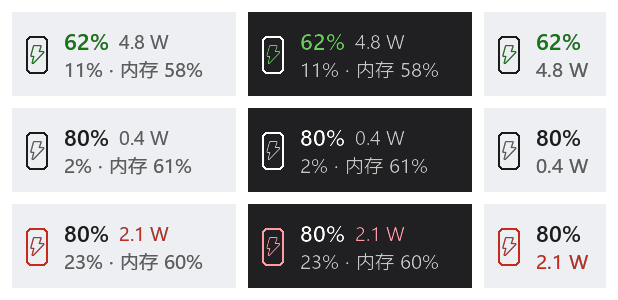
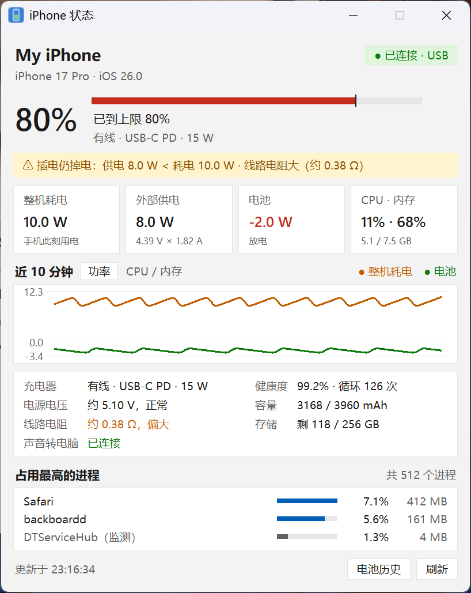
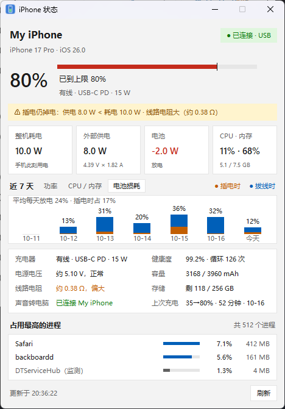

iPhone Monitor
在 Windows 任务栏实时看 USB 连接的 iPhone 电量、功耗、CPU 和内存，并找出「插着线为什么还在掉电」。不用越狱，手机上不装任何 App。开源免费（GPL-3.0），中英双语。
下载最新版（Windows） GitHub 源码 B站专栏：用它发现的几件事

能做什么
- 任务栏文字条：手机图标、电量、整机功耗，第二行是手机 CPU 和内存；电池在放电时图标变红，插着线也一样。
- 详情窗口：整机耗电、外部供电（电压 × 电流）、电池充放电、10 分钟曲线、占用最高的进程。
- 供电诊断：估算电源实际电压和线路电阻，判断是线不好、电脑 USB 口不行，还是手机负载太高。
- 电池损耗统计：用手机自己的能量计数，按天统计插电时、拔线时各放了多少电，看清循环次数是怎么涨的。
- 其他：充电上限与预计充满时间、蓝牙把手机声音转到电脑播放、iPhone 热点接管电脑网络时提醒。


怎么用
- 在微软商店安装 Apple Devices。
- 下载 iPhoneMonitor.zip，解压后运行 iPhoneMonitor.exe。
- 数据线连接 iPhone，解锁并点「信任此电脑」。
- 想看 CPU / 内存：在 iPhone 上打开开发者模式（可选）。
需要 Windows 10/11 和 iOS 17 及以上。所有数据只存在本机，没有任何上报。
In English
iPhone Monitor is a free, open-source Windows tool that shows a USB-connected iPhone's battery level, whole-phone power draw, CPU and memory right in the Windows 11 taskbar. It explains why an iPhone drains while plugged in (supply voltage and cable resistance estimates, weak USB ports, load spikes), tracks daily battery wear from the phone's own energy counters, and can play iPhone audio on the PC over Bluetooth. No jailbreak, nothing to install on the phone. Built on pymobiledevice3. Read the README.
姊妹项目
Apple USB NCM 驱动：一根 USB-C 线让 Mac 和 Windows 直连传文件，不用 USB 转网口。